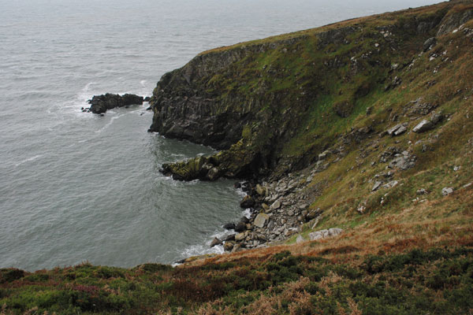
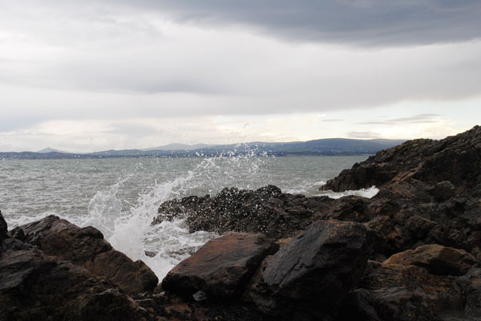
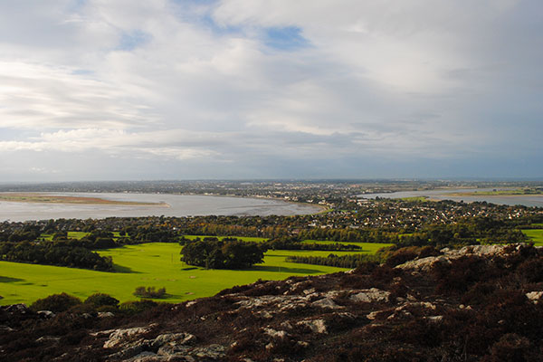
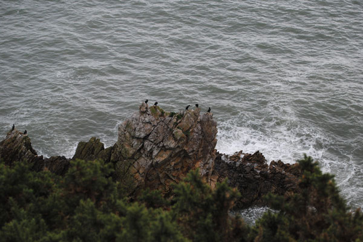
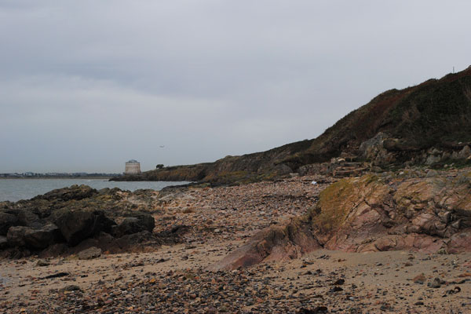

“Grey morning dulled the bay. Banks of clouds, Howth just one more bank, rolled to sea, where other Howths grumbled to greet them." - Jamie O'Neill
The "vacation" portion of the trip had come to an end, and I was off to Malahide for a work event. It was also the first day where there was rain -- the heavy, relentless rain I had expected from Ireland. Nevertheless, Malahide was beautiful. A quiet, coastal town just outside of Dublin's urban reach.
 Hiking in Howth, a nearby village, was a highlight. The views were spectacular, and the fresh air was rejuvenating.
Ireland, I'll be visiting again soon.
The Grand Hotel - http://www.thegrand.ie
Gibney's Pub - http://www.gibneys.com
Coast Restaurant @ The Grand - http://www.thegrand.ie/dublin-irish-restaurant.aspx